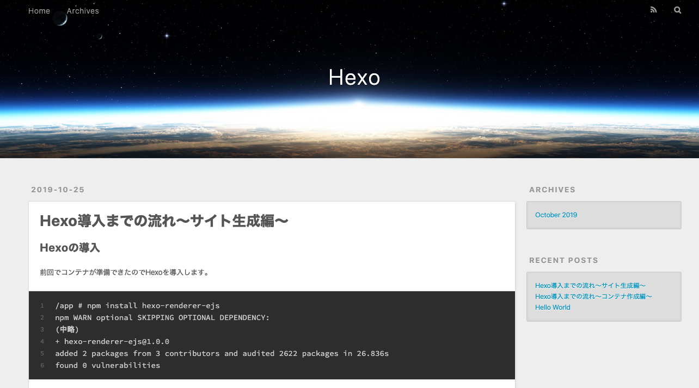
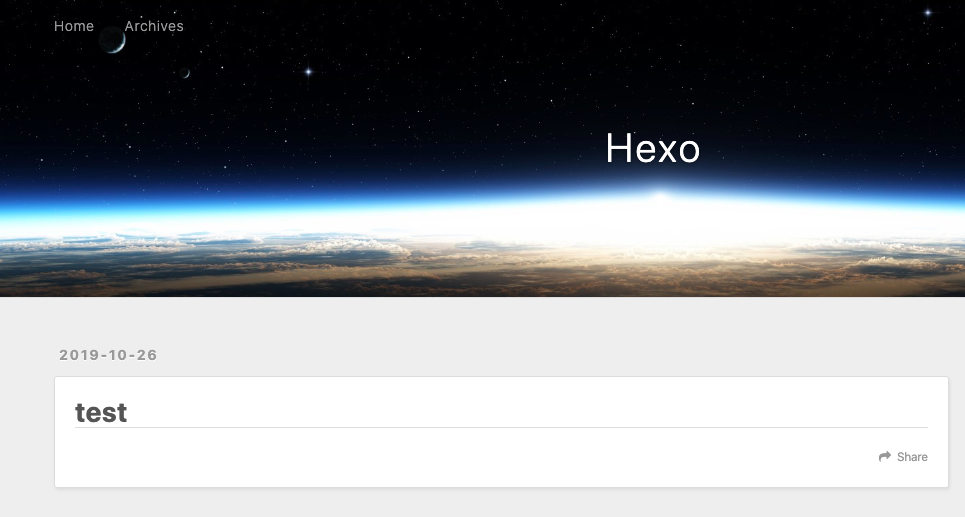

Hexoサイト生成
前回でコンテナが準備できたので
以下のコマンドを実行してサイトを生成しましょう。
1 | /app # hexo init test && cd test |
githubから雛形をクローンしてるみたいですね。
これでローカルに何やらフォルダができたはずです。
1 | test |
この状態ですでにサイトをプレビューできます。
以下のコマンドを実行して http://localhost:4000 にアクセスしてみます。
1 | /app/test # hexo server |

記事の追加
記事を追加するには以下のコマンドを叩きます。
hexo new {記事の種類} [タイトル名]
1 | hexo new draft test |
これでテストというタイトルの記事が作成されました。
source>_drafts>test.mdが作成されたはずです。
_draft内の記事は下書きとして扱われ、Hexoサーバ起動時にはプレビューされません。
下書きを編集する際にはdraftオプションをつけてサーバを起動します。
1 | /app/test # hexo server --draft |
testが追加されていますね。

testはMarkdownで好きに編集してください。
ちなみにTitleはファイル名と同じじゃなくても問題ないみたいです。
ファイル名（hexo newコマンドで指定したもの)はURLとか内部的に使う、
Titleは記事内とか人が見るものに使う、って理解でいいのかなと思います。
また、そのままだとホーム画面に表示された時に全文が表示されてしまうので、以下のmoreを使います。
1 | <!-- more --> |
そうすることでRead moreボタンが表示されるようになります。
1 | --- |
さて、Draftをプレビューしてこれで行くぜって状態になったら、パブリッシュです。
hexo publish (ドラフト内の記事タイトル)でドラフトからpostへ移動できます。
1 | /app/test # hexo publish test |
hexo serberコマンドでpostに移動されているか確認してみましょう！
できましたか？？
次回はこのサイトをGithub Pageにデプロイしてみたいと思います。